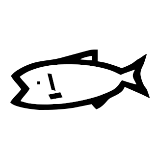

私が作ったもの一覧
SmileSnake
しょー・でぃている

単なる蛇ゲームです。
基本は普通の蛇ゲームと同じルールで、 壁や体といった障害物を避けつつ、エサを食べて体を伸ばし続けます。
時々、イチゴやチェリーといった果物も出現します。
食べると何かが起こるようになってます。
ダウンロード
基本は普通の蛇ゲームと同じルールで、 壁や体といった障害物を避けつつ、エサを食べて体を伸ばし続けます。
時々、イチゴやチェリーといった果物も出現します。
食べると何かが起こるようになってます。
●対応プラットフォーム：Windows
●使用言語/ツール：Gamemaker Studio 2
●バージョン：v1.03
●使用言語/ツール：Gamemaker Studio 2
●バージョン：v1.03
ダウンロード
JavaScript で作ったテトリス
しょー・でぃている
マス…？
しょー・でぃている

適当に描いたマス…のようなものです。
経緯は About を見てください。
一応フリー素材なので、自由にお使いくださいw 保存方法：パソコンの方は以下のリンクに飛んだあと、右クリックして「名前を付けて保存」をクリックしてください。
スマホの方はリンク先を長タップして「写真に追加」や「画像を保存」をタップしてください。
なお、スマホの方は「SVG」が保存できませんのでご了承ください。
PNG ダウンロード
SVG ダウンロード
経緯は About を見てください。
一応フリー素材なので、自由にお使いくださいw 保存方法：パソコンの方は以下のリンクに飛んだあと、右クリックして「名前を付けて保存」をクリックしてください。
スマホの方はリンク先を長タップして「写真に追加」や「画像を保存」をタップしてください。
なお、スマホの方は「SVG」が保存できませんのでご了承ください。
●対応プラットフォーム：PC、スマホ(SVG はスマホ非対応)
●使用言語/ツール：GIMP(原画作成)、Inkscape(SVG 変換)
●使用言語/ツール：GIMP(原画作成)、Inkscape(SVG 変換)
PNG ダウンロード
SVG ダウンロード